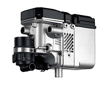

(3452) 622-777, 249-780
Тюмень, ул. Червишевский тракт, 64, корп. 2 офис 2
Star Line Twage B92 Dialog

Надежная автомобильная охранная система с диалоговой авторизацией, индивидуальными ключами шифрования, автозапуском и функцией интеллектуального автозапуска. Рассчитана на работу в условиях экстремальных городских помех. Предназначена для защиты автомобилей среднего и высокого ценового диапазона в составе охранного комплека StarLine «Победит».
Надежная автомобильная охранная система с диалоговой авторизацией, индивидуальными ключами шифрования, автозапуском и функцией интеллектуального автозапуска. Рассчитана на работу в условиях экстремальных городских помех.
Особенности автосигнализации StarLine Twage B92
- Криптостойкий код сигнала «Быстрый диалог»
- Интеллектуальный автозапуск двигателя
- Автоматический контроль канала связи
- Применение индивидуальных ключей шифрования для каждой системы
- Повышенная скорость скорость передачи данных
- Помехозащищенность управляющего сигнала
- Противоударный брелок с двусторонней связью
- Эргономичный дизайн и удобство брелока
- Антенный модуль встроен в брелок
- Комфортная подсветка брелока с ЖКИ
- Интуитивно понятный дисплей
- Руссифицированные обозначения иконок дисплея
- Крупные иконки
- Расширенный температурный диапазон, от -40 до +85ºС
- Полноценная совместная работа со спутниковым модулем StarLine Messenger GPS
Преимущества для установщиков:
- Модернизирован алгоритм программирования функций. Теперь в онлайне на дисплее брелка можно видеть номер функции и ее запрограммированное значение.
- Модернизировано управление дополнительными каналами позволившие устанавливать систему StarLine Twage B92 на все современные автомобили. Для повышения противоугонной защищенности могут быть подключены цифровые беспроводные реле блокировки StarLine R2.
- Модели StarLine Twage B92 могут быть легко трансформированы в охранно-поисковый комплекс добавлением одного из GSM/GPS модуля StarLine, которые соединятся с сигнализацией по локальной сети посредством одного единственного 3 контактного разъема.
- Более 50 стандартных и программируемых функций обеспечивают владельцу автомобиля не только надежную защиту, но и комфорт при использовании автомобильной сигнализации StarLine Twage B92
Цена: 9 750